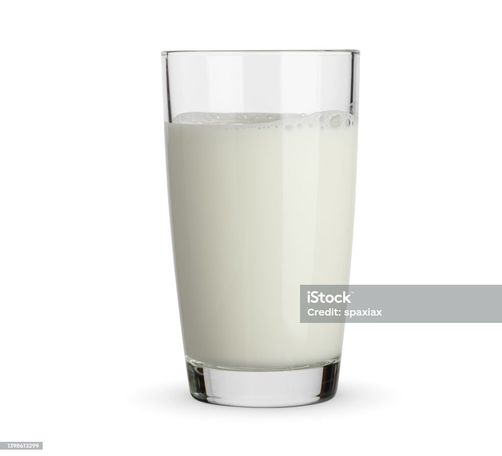

Warm milk

Nutritious warm milk
A simple recipe for warm milk.
Ingredients:
Steps:
- Pour the milk in a cup. Don't use a cup with materials that are dangerous in a microwave oven.
- Insert the milk-filled cup in a microwave oven and turn on the microwave oven for 40-60 seconds. Consult
your microwave's manual or personal experience for the power output to use here.
- Once the milk is heated up, cautiously remove the cup from the microwave oven.
Be wary of the hot contents.